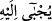
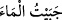
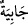
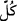
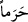
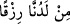
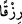
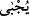
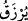
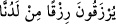

kurarlar. Onlar sayıca çok, biz ise onlara mukâvemet edecek sayıda değiliz.”
Allah Teâlâ bu düşünceye şu şekilde cevap verdi: “Biz onları, kendi katımızdan bir
rızık olarak her şeyin ürünlerinin” Mısır, Şam, Yemen, Irak gibi bölgelerden “toplanıp
getirildiği,” Beytullah’ın haremliğinden dolayı da bölgeyi emniyetli, “güvenli,”
kıldığımız “dokunulmaz bir yere (Mekke-i Mükerreme’ye) yerleştirmedik mi?”
Araplar Mekke’nin etrafında savaşıp birbirlerine zarar verirlerken, Mekkeliler emin
olarak yaşarlardı. “Fakat onların çoğu bilmezler.” Mekke ehlinin çoğu câhil
kimselerdir, öğrenmek için akledip düşünmezler.
Harem, bütün zıt mizaçların güven içinde olduğu yerdir. Kuş, insanlarla âşinâdır ve
onlardan emindir. Ceylan köpekten güvendedir. Harem’de olan her korkak güvende olur.
Araplar Harem’de kötülüğün yasak olduğunu (hürmet) bilseler, orada öldürmeyi ve
yağmayı nasıl reva görürler?
“
”, oraya herşeyin ürünleri toplanıp getirilir, anlamına gelir. Bu fiil, “
(suyu havuzda topladım)” sözünden alınmıştır. “
”, su havuzu demektir.
Bilindiği gibi, doğu ve batı bölgelerine âid her türlü meyva ve yiyeceğin Mekke’de
mevcud bulunması, İbrâhim (a.s.)’ın “Onları çeşitli meyvalarla rızıklandır” (İbrâhim,
14/37) duâsı sebebiyledir.
Kâşifî der ki: Her türden ürünü (menâfi), her bölgeden ilginç (garib) şeyleri oraya
getirirler.
“ (her şey)” ile çokluk kasdedilir. Bu cümle, “
” kelimesinin başka bir sıfatıdır.
Memleketten memlekete nakledilerek gelen yiyeceğin kesilmesiyle Mekke halkının
uğrayacağı muhtemel bir zararı def eder.
“
”, mahlûklardan değil bizim katımızdan bir rızık olarak, demektir.
Puta taptıkları halde onların hâli böyle olunca, Beytullah hürmetine tevhid hürmetini
de ilave ettiklerinde diğer Araplar tarafından çiğnenmekten niçin korksunlar?
Fakir (Bursevî) der ki:
İlâhî seçkin bir haremdir tevhîd
Herkese sığınılacak mekândır tevhid
Îman, güven ve esenliğe sebeptir
Gönlün murâdına ermesi için gidilen anayoldur tevhid
“
” kelimesi, “
(toplanıp getirilir)” mânâsına gelen fiilin müekked masdarı
olmak üzere mansubtur. Çünkü bu fiilde “
(rızıklanır)” fiilinin mânâsı vardır. “
” yani, onlar bizim katımızdan rızıklanırlar, demektir.
Kâşifî der ki: Bu ekin bitmez vâdîde başkasının minneti olmaksızın katımızdan onlara
rızık verdik.
Beyânü’l-arâis’te der ki: Hakîkatta onların haremi, Muhammed (s.a.)’in kalbidir. O